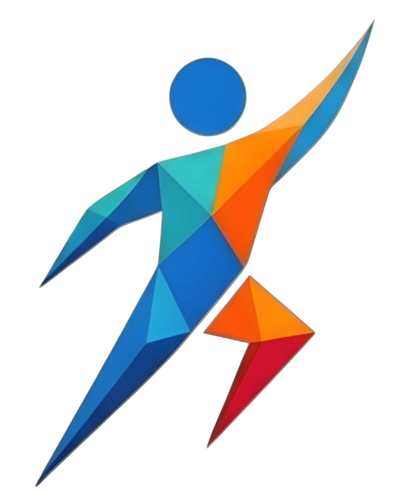
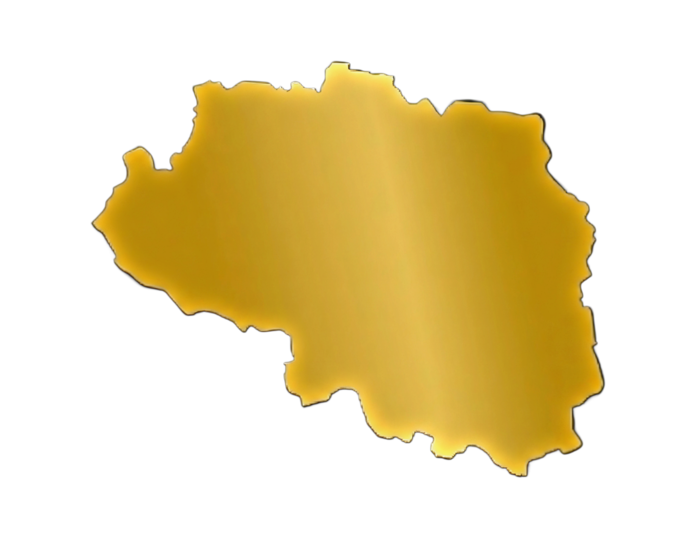
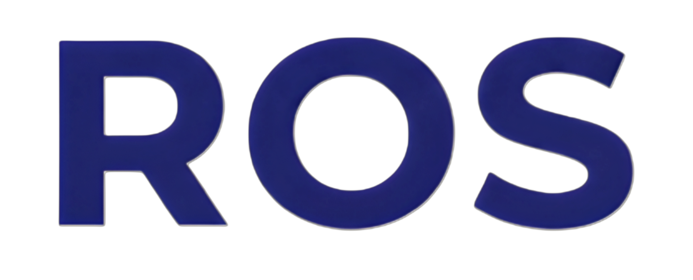

লোগো সম্পর্কে

রাজশাহী অলিম্পিয়াড সোসাইটি
রাজশাহী অলিম্পিয়াড সোসাইটি-এর অফিশিয়াল লোগোটি অত্যন্ত দূরদর্শী এবং অর্থবহ ভাবনার ওপর ভিত্তি করে তৈরি করা হয়েছে। লোগোটির প্রতিটি অংশ আমাদের মূল লক্ষ্য, आदर्श এবং আঞ্চলিক গৌরবকে ফুটিয়ে তোলে। নিচে এর প্রতিটি অংশের অর্থ তুলে ধরা হলো।
১. উন্মুক্ত গ্রন্থ (The Open Book)
লোগোর একদম নিচে স্থান পাওয়া খোলা বইটি জ্ঞান, শিক্ষা এবং প্রগতির চিরন্তন प्रतीक। এটি নির্দেশ করে যে, আমাদের সংগঠনের প্রতিটি কার্যক্রমের মূল ভিত্তি হলো শিক্ষার আলো ছড়িয়ে দেওয়া এবং একটি জ্ঞানভিত্তিক সমাজ বিনির্মাণ করা।

২. গতিশীল মানবাকৃতি (The Dynamic Human Figure)
গ্রন্থের ওপর থেকে আকাশের দিকে হাত বাড়িয়ে থাকা মানবাকৃতিটি তরুণ প্রজন্মের অদম্য ইচ্ছা, আত্মবিশ্বাস এবং সাফল্যের শিখরে পৌঁছানোর আকুলতাকে প্রকাশ করে। জ্যামিতিক বহুভুজ (Polygon) স্টাইলের এই আধুনিক ডিজাইনটি তরুণদের বহুমুখী প্রতিভা এবং বৈচিত্র্যময় সম্ভাবনার প্রতীক।
৩. দীপ্ত নক্ষত্রসমূহ (The Glowing Stars)
মানব হাতটি যে উজ্জ্বল সোনালী নক্ষত্রটিকে স্পর্শ করছে, তা আমাদের চূড়ান্ত লক্ষ্য এবং শ্রেষ্ঠত্ব (Excellence) অর্জনের ইঙ্গিত দেয়। চারপাশের রঙিন নক্ষত্রগুলো সাফল্যের বিভিন্ন ধাপ, সৃজনশীলতা এবং তরুণদের স্বপ্নপূরণের দীপ্তিময় প্রকাশ।

৪. রাজশাহী বিভাগের মানচিত্র (The Map of Rajshahi Division)
মানব অবয়বের পটভূমিতে থাকা সোনালী মানচিত্রটি বাংলাদেশের গৌরবময় রাজশাহী বিভাগকে নির্দেশ করে। এটি স্পষ্ট করে যে, এই অঞ্চলের মেধা ও ঐতিহ্যকে বিশ্বমঞ্চে তুলে ধরা এবং স্থানীয় তরুণদের নিয়ে কাজ করাই আমাদের মূল অনুপ্রেরণা।
৫. চারপাশের বৃত্তাকার রেখা (The Circular Swoshes)
লোগোটিকে দুই পাশ থেকে আগলে রাখা নীল ও সোনালী রঙের গতিশীল বাঁকা রেখাগুলো একতা এবং সুরক্ষার প্রতীক। একই সাথে এটি একটি অন্তহীন বৃত্তের আভাস দেয়, যা আমাদের সুদূরপ্রসারী দূরদর্শিতা (Global Vision) এবং টেকসই ভবিষ্যৎ গড়ার প্রত্যয়কে ধারণ করে।

৬. ROS (আরওএস)
ROS (আরওএস) শব্দটি আমাদের মূল সংগঠন 'রাজশাহী অলিম্পিয়াড সোসাইটি'-এর সংক্ষিপ্ত রূপ হিসেবে ব্যবহৃত হয়েছে। লোগোর ওপরের অংশে যখন একঝাঁক গতিশীলতা ও স্বপ্ন ডানা মেলছে, তখন নিচের এই টেক্সটটি পুরো ডিজাইনটিকে একটি চমৎকার গাঠনিক ভারসাম্য ও মজবুত ভিত্তি প্রদান করেছে। এটি প্রকাশ করে যে, সংগঠনের সমস্ত স্বপ্ন ও গতিশীলতা একটি সুনির্দিষ্ট এবং সুদৃঢ় কাঠামোর ওপর প্রতিষ্ঠিত।
সামগ্রিক মূলভাব (Overall Essence)
"রাজশাহী অঞ্চলের মেধাকে ধারণ করে, শিক্ষার আলোয় উদ্বুদ্ধ হয়ে, তরুণ প্রজন্ম যেন সাফল্যের সর্বোচ্চ শিখরে পৌঁছাতে পারে—সেই লক্ষ্যে একটি সুদৃঢ় প্রাতিষ্ঠানিক ভিত্তির ওপর দাঁড়িয়ে ঐক্যবদ্ধভাবে কাজ করে যাচ্ছে রাজশাহী অলিম্পিয়াড সোসাইটি।”